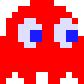

Блинки
Блинки - это лидер призраков и заклятый враг Пакмана. Является самым агрессивным призраком, постоянно преследует Пакмана. От Блинки трудно убежать, если он начинает гнаться за вами.
Поведение
В режиме преследования Блинки использует как цель ту клетку, в которой находится Пакман. Он, в отличие от других привидений, увеличивает свою скорость преследования относительно первоначальной дважды за уровень в зависимости от количества съеденных точек. Если точек осталось мало, то он меняет целевую клетку в режиме рассеивания на квадрат, в котором находится Пакман, и так гоняется за героем в двух режимах. Подобное «агрессивное» поведение призрака игроки прозвали «круизом Элроя» (англ. Cruise Elroy).
|
Блинки
|
|
|

|
|
| Имя |
Шэдоу (англ. Shadow) |
| Прозвище |
Блинки (англ. Blinky) |
| Японское имя |
Оикакэ (яп. 追いかけ, преследователь) |
| Японское прозвище |
Акабэй (яп. 赤ベイ, красный) |
| Пол | Мужской |
| Вид | Призрак |